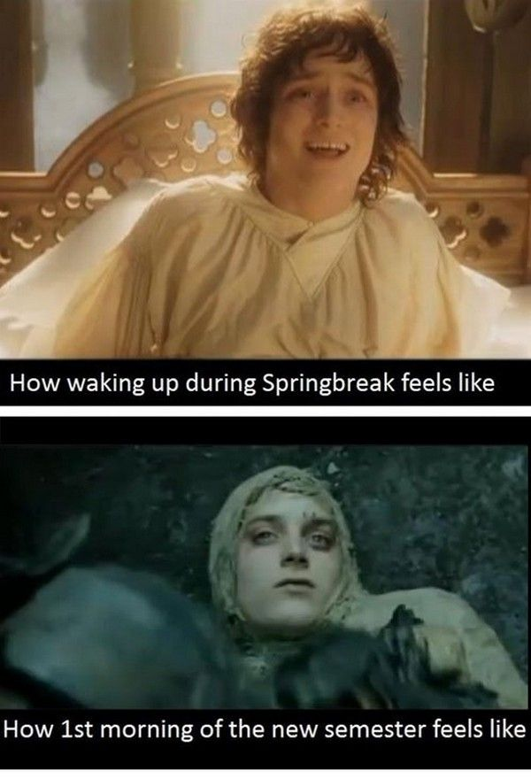

- Trevor McKee (he, him), Communication Design, Junior
- As a Commnunication Design major, I am required to take this course. However, I am currently enrolled in CSE 131 and am considering a minor in Human Computer Interaction (depends on if I like this class!).
- I have some experience with HTML and CSS from personal projects and LinkedIn Learning. Hopefully I'll be learning about JavaScript in CSE131!
- I would really like to be comfortable enough with the HTML/CSS/JS to program my own website.
- Paper is non-movable, while screen-users can click and interact with sites.
- JK Offroad Tours I find this site to be visually exciting and effectively communicative. The color scheme and typeface choices reflect the services offered, and there are some fun features like Las Vegas weather conditions and a social media section.
- Amazon This site clearly communicates user options through sections, profile settings, and commerce selections.
- Google Part of the reason I believe Google is so effective is its simplicity. There are no advertisements, only simple options for connecting with Google services as well as the intuitive and fast search engine.
